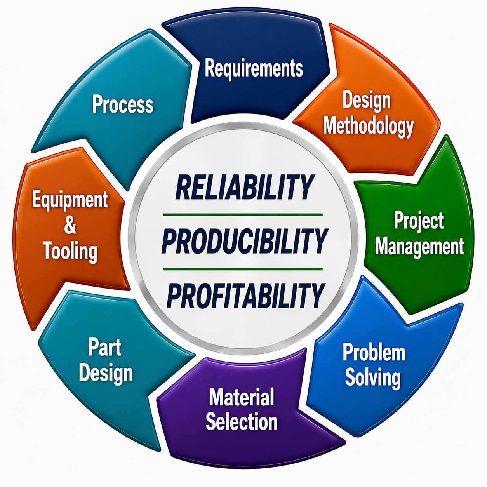

1. Product Needs & Requirements
From customer and market needs through measurable engineering requirements and development of the Product Requirements Document.
Course overview →An eight-module engineering curriculum built around Synergistic Engineering Design — a structured methodology that connects requirements, design methodology, project management, structured problem solving, material selection, part design, tooling and equipment, and production process to reliable product development and production.
Synergistic Engineering Design treats product development as one connected engineering system rather than a series of independent activities. Reliable products depend on the interaction of design, material, tooling, equipment, process, and the people responsible for carrying the work from concept into production. A decision made in one area can affect stresses, variation, manufacturability, cost, schedule, or reliability elsewhere in the product or project.
The curriculum follows that system from beginning to end: defining what the product must accomplish, developing and evaluating design concepts, organizing and managing the work required to execute them, solving problems when results differ from expectations, selecting materials for the actual application, designing parts around material behavior, developing tooling, equipment, and manufacturing methods capable of reproducing the design, and establishing a controlled molding process.
The goal is not simply to teach individual engineering tools. It is to show how requirements, design methodology, project management, structured problem solving, material selection, part design, tooling and equipment, and production process work together to move from an identified product need to reliable product development and production.
Engineering projects rarely fail because no one on the team understands an individual discipline. Problems often occur at the interfaces between disciplines—when a requirement affects a design decision, a material choice changes part behavior, a part feature creates tooling or molding difficulty, a process limitation changes achievable tolerances, or a technical decision affects cost, schedule, reliability, or manufacturability.
An engineer does not need to be an expert in every area of product development. However, understanding how requirements, design methodology, project management, problem solving, materials, part design, tooling and equipment, and production process interact provides a much stronger foundation for making engineering decisions. It helps engineers recognize downstream consequences earlier, communicate more effectively with specialists, identify risks before they become expensive problems, and make decisions based on the needs of the overall product and project rather than a single discipline.
The purpose of the Engineering Product Development Curriculum is therefore not to create eight different kinds of specialists. It is to develop working knowledge across the full product-development system, while providing greater depth and practical tools within each subject. That broader understanding helps an engineer know what to consider, what questions to ask, when additional expertise is needed, and how individual engineering decisions fit into the larger development effort.
Coursework provides a strong starting point, but it does not create expertise by itself. These courses provide knowledge, structure, practical tools, and engineering understanding within each discipline, while also showing how the disciplines within the full product-development system are interconnected. The goal is to develop and strengthen synergistic engineering thinking—building knowledge and capability within each discipline while developing the broader understanding needed to recognize how decisions in one area influence the others and affect the product and project as a whole. That foundation can make experience more focused and productive by helping engineers recognize what matters, ask better questions, and learn more deliberately from application. Experience becomes understanding. Understanding refines judgment.

All eight modules are available for instructor-led engineering education. Courses can be delivered individually or combined to follow the development path most useful to the organization, from defining product requirements through design methodology, project management, structured problem solving, plastic material selection, plastic part design, tooling and equipment, and molding process development.
Instructor-led courses use practical engineering tools, worksheets, calculators, checklists, project records, and worked examples developed and refined through actual engineering work. Applicable working tools can be provided with the course for continued use on the participant's own projects.
From customer and market needs through measurable engineering requirements and development of the Product Requirements Document.
Course overview →From defined product requirements through functional decomposition, concept generation and evaluation, engineering analysis, reliability, verification, and design refinement.
Course overview →Turning engineering work into an executable project through scope definition, phase-gated planning, schedules, ownership, financial and resource planning, risk and action tracking, project records, technical reviews, verification gates, change control, production launch, and project closure.
Course overview →A systematic approach to investigation, root cause, verification, and corrective action using the reasoning and tools appropriate to the problem rather than relying on the name of a framework.
Course overview →Material selection based on application requirements, environmental loads, time, temperature, chemical exposure, processing history, and long-term performance.
Course overview →How plastic design differs from metal design, and how creep, shrinkage, wall thickness, ribs, draft, weld lines, tolerances, and thermal behavior affect performance.
Course overview →Tooling and equipment decisions that determine whether a design can be produced consistently, efficiently, and maintainably.
Course overview →Developing repeatable cavity conditions and controlling the variables that determine fill, pack, cooling, cycle, quality, and long-term process stability.
Course overview →A focused overview of the essential material, part-design, tooling, and molding considerations that influence the quality and reliability of a plastic component. Intended for engineers and others who need to understand the critical interactions and design decisions without the full instructional depth of the eight-module program.
Course overview →The curriculum uses working engineering resources including requirements and QFD tools, PRD and design-risk documentation, Pugh concept selection, project planning and tracking systems, structured problem-solving forms, part-design and tolerance tools, part-cost estimation, mold-design and review tools, runner and gate calculations, cooling and water-system calculations, press and shot sizing, molding setup and process-development studies, and troubleshooting resources. Individual course pages identify the tools used in each module.
Expanded self-study editions are being developed to provide the detailed explanation, worked examples, case studies, and application detail needed to learn the material independently. The same editions can accompany instructor-led training and remain useful afterward as continuing engineering references.
Modules I and II are being prepared as the first grouped self-study release. Additional modules will follow as their self-study editions are completed.
Engineering education, examples, worksheets, calculators, guidelines, and working tools are provided to support engineering understanding, analysis, and decision-making. They do not replace the engineering judgment, analysis, verification, testing, or review required for a specific application. Users remain responsible for determining applicability, verifying assumptions and results, and ensuring that resulting designs, tooling, processes, equipment, and products meet the requirements of their specific application.
Read the full Educational Use & Engineering Responsibility statement →